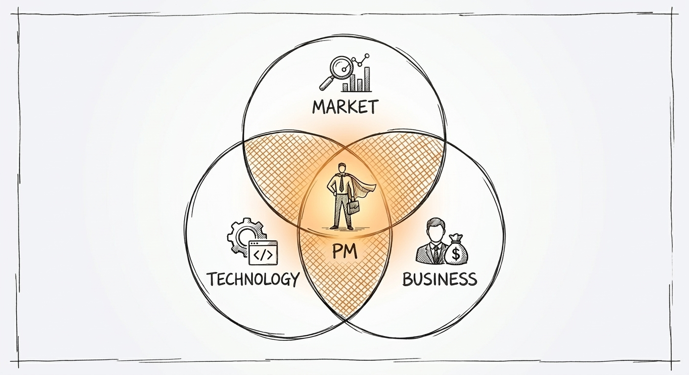
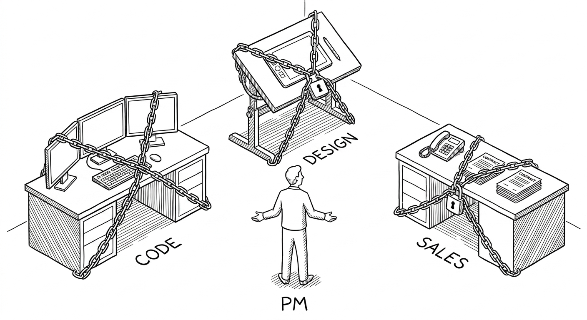
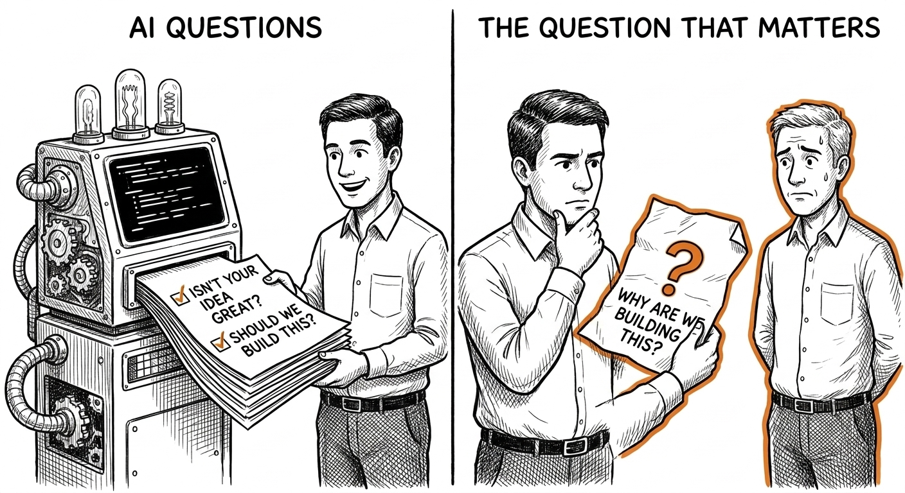
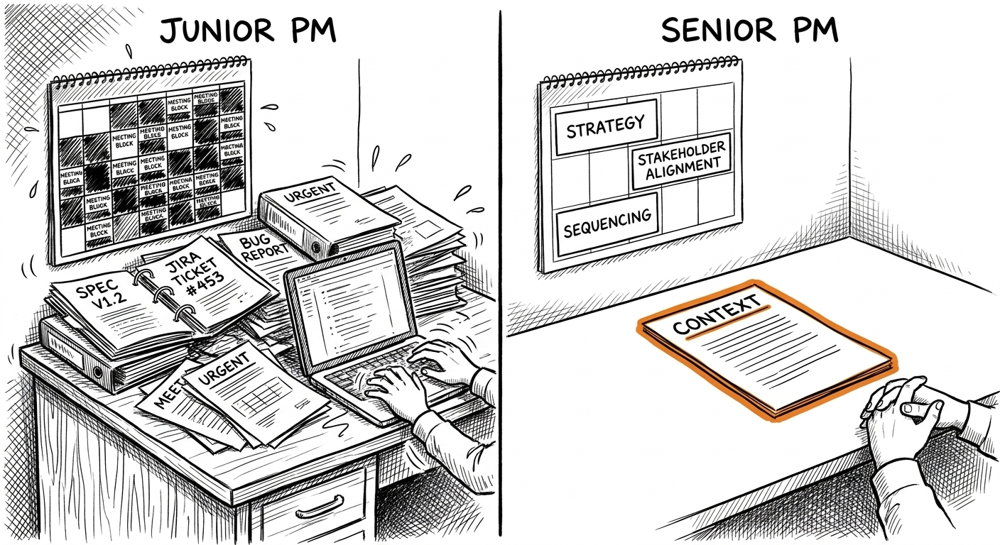

Chapitre 1 Que font vraiment les PM ?
Architect? avait vu juste : c'est l'apprentissage qui définit une profession. Celui du product management était mauvais. « Regarde-moi faire, rédige des docs et va en réunion » — voilà le modèle qui a tenu dix ans. Survivre aux basses besognes, accumuler les répétitions, et un jour quelqu'un vous confie une vraie décision. Cette échelle a disparu. L'IA fait les basses besognes. Il ne reste plus de corvée à laquelle survivre. Vous êtes jeté dans le jugement dès le premier jour, sans deux ans devant vous pour découvrir si la vie de PM vous plaît. Il vous faut le savoir maintenant.
Mais avant de savoir si ce métier vous plaît, encore faut-il comprendre ce qu'il est réellement — pas ce qu'en disent les fiches de poste, ni les publications LinkedIn, ni l'influenceur PM aux 200 000 abonnés qui poste sur « l'ownership de la roadmap ». C'est à la fois plus simple et plus difficile que tout cela.
1.1 Comment le rôle est né — et pourquoi cette histoire compte
Le product management comme intitulé de poste à part entière a environ cinquante ans. Il ne vient pas de la tech. Il vient des biens de grande consommation. Un product manager chez Procter & Gamble dans les années 1950 était un intendant de marque — responsable du chiffre d'affaires, du marketing et du positionnement concurrentiel d'un produit précis. Le rôle était explicitement transversal : vous ne contrôliez ni l'usine ni la force de vente, mais vous répondiez de la performance du produit. De l'influence sans autorité. Cela vous rappelle quelque chose.

Les entreprises tech ont emprunté le titre dans les années 1980 et 1990 et en ont changé le sens. Chez Microsoft, les premiers PM étaient quasi techniques — assez proches de l'ingénierie pour écrire des spécifications, assez distincts pour posséder le problème client. La spécification était l'artefact. Le produit était le logiciel. Le métier consistait à faire le pont entre les deux.
Google a ajouté l'échelle et la donnée. Quand un produit sert des centaines de millions d'utilisateurs, l'intuition seule ne peut plus dire ce qui est vrai. Les PM de Google ont appris à mener des expérimentations, à interpréter la significativité statistique, et à distinguer le signal du bruit dans des tableaux de bord mis à jour en temps réel. La maîtrise de la donnée est devenue un prérequis du métier.
Facebook a ajouté la croissance. L'archétype du growth PM — obsédé par les tunnels d'acquisition, les métriques d'activation et les courbes d'utilisateurs composées — est né de cette époque et s'est répandu partout. En 2015, toutes les startups voulaient leur « growth PM ». La plupart entendaient par là « quelqu'un qui A/B testera des couleurs de bouton jusqu'à ce que les chiffres montent ».
Puis l'IA est arrivée et a de nouveau changé le métier. Pas en créant une spécialisation « PM IA » — étiquette qui signifie trois choses complètement différentes selon qui l'emploie. L'IA a changé le métier en automatisant l'échafaudage qui définissait jusque-là le travail du PM. La spec. La synthèse de recherche. Le premier jet de document. L'analyse de funnel. Tout cela est devenu accessible à quiconque a un navigateur. Ce qui est resté — ce qui a toujours été là, sous l'échafaudage —, c'est le jugement. Le choix des problèmes. Le récit. La responsabilité.

Cette histoire compte parce qu'elle vous dit ce qui est durable. Le titre a changé de mains à travers les industries et les décennies. Le travail sous-jacent — quelqu'un qui répond des résultats d'un produit sans contrôler les gens qui le construisent — n'a pas bougé.
1.2 Ce que font les PM toute la journée : la version honnête
Demandez à un PM ce qu'il fait de ses journées : il vous décrira le plus souvent une réunion ou un document. Les deux réponses sont fausses de la même façon : elles décrivent le contenant, pas le contenu.
Voici un récit plus honnête d'une journée représentative de PM, dans une entreprise de taille moyenne, hors période de crise :
8 h 30. Slack est ouvert. Onze messages d'hier n'ont pas été résolus, dont un d'un ingénieur qui interroge une décision produit soi-disant documentée il y a six semaines, mais qui présente maintenant une aspérité nouvelle. Vous lisez le fil. L'aspérité est réelle. Vous la signalez.
9 h. Point hebdomadaire avec le design. Vous passez en revue le prototype d'une fonctionnalité en chantier depuis trois semaines. Le prototype est presque juste. La designer vous pose deux questions auxquelles vous n'avez pas encore complètement répondu : que se passe-t-il pour les utilisateurs qui déclenchent le cas limite, et que dit l'état vide. Les deux exigent que vous ayez une opinion sur l'utilisateur, pas sur le design. Vous répondez à l'une avec assurance et admettez devoir réfléchir à l'autre. Vous sortez de la réunion avec une question ouverte de plus.
10 h. Vous rédigez le document qui répond à la question de l'ingénieur. Trois paragraphes. Quarante minutes. Vingt minutes d'écriture ; vingt minutes à vérifier que vous n'introduisez pas une contradiction nouvelle avec une décision d'il y a trois mois dont vous ne vous souvenez qu'à moitié.
10 h 45. Message Slack de votre manager : le VP Sales a mentionné en réunion de direction qu'un client veut une fonctionnalité précise pour la fin du trimestre. C'est la troisième fois que ce client particulier fait avancer une conversation de roadmap par des canaux détournés. Vous écrivez à votre manager une réponse à la fois diplomate envers les Sales et claire sur ce que serait l'arbitrage. Vous ne l'envoyez pas tout de suite. Vous attendez quinze minutes et vous la relisez.
11 h 30. Sprint planning. C'est le lead engineer qui l'anime. Votre rôle ici est de répondre aux questions, pas de diriger. Trois tickets ont des critères d'acceptation flous que vous seul pouvez trancher. Vous les tranchez. L'un se révèle bien plus gros que l'estimation, et vous devez décider : réduire le périmètre ou reporter. Vous réduisez le périmètre. Vous écrivez à la partie prenante qui l'avait demandé pour expliquer ce qui reste et ce qui saute.
13 h. Vous déjeunez. Vous passez vingt minutes dans l'application d'un concurrent, parce qu'un utilisateur l'a mentionnée sur Twitter et que vous voulez comprendre de quoi il parle avant qu'on ne vous pose la question en réunion.
14 h. Une chercheuse de l'équipe recherche utilisateur vous envoie la synthèse de cinq entretiens menés la semaine dernière. Vous la lisez attentivement. Elle confirme en partie ce que vous pensiez déjà, et le contredit en partie. La partie qui contredit est celle qui compte. Vous bloquez trente minutes avec la chercheuse pour creuser.
15 h. Réunion avec l'équipe data. Vous cherchez à comprendre pourquoi une métrique a bougé la semaine dernière. L'analyste déroule trois hypothèses. L'une est presque certainement la bonne, mais impossible d'en être sûr sans une découpe par segment qui prendra deux jours. Vous la demandez.
16 h. Une heure réellement libre. Vous l'employez à écrire la mise à jour de roadmap attendue pour demain. Vous n'écrivez pas sur ce que vous construisez. Vous écrivez sur ce que vous avez appris et ce que vous faites différemment en conséquence. C'est la partie que la plupart des PM sautent. La roadmap comme rapport d'avancement est une perte de temps pour tout le monde. La roadmap comme trace de ce qui a changé votre réflexion — et pourquoi — est la version qui vaut la peine d'être écrite.
17 h 30. Fin de journée. Quatre points ouverts issus des réunions du jour. Deux sont réellement urgents. Vous triez. L'un se règle en vingt minutes. Pour l'autre, vous posez un rappel pour demain matin, quand vous aurez plus de contexte.
Remarquez ce qui ne s'est pas produit aujourd'hui : vous n'avez rien livré. Vous n'avez pas écrit une ligne de code. Vous n'avez rien designé. Vous n'avez pas construit de tableau de bord. Vous avez passé l'essentiel de la journée en conversation — écrite et orale — à prendre de petites décisions qui, en s'accumulant sur des semaines, deviendront un produit qui résout quelque chose pour quelqu'un, ou pas.
Voilà le métier. Au quotidien, cela donne : des conversations, des décisions, des documents, et l'anxiété sourde de savoir que beaucoup de ce que vous avez décidé aujourd'hui l'a été sur information incomplète — et que vous ne saurez pas avant des semaines si c'était juste.

1.3 Ce que les PM ne font pas (contrairement à ce que tout le monde croit)
Pour les PM, le mythe le plus destructeur est « le PM est le CEO du produit ». Répété tant de fois qu'il s'est calcifié en sagesse reçue. Il est faux dans presque chaque détail, et il fait des dégâts réels — chez les PM qui y croient comme dans les équipes qui travaillent avec eux.
Les CEO ont une autorité formelle. Les PM, presque jamais. Les CEO peuvent embaucher et licencier ceux qui construisent le produit. Les PM n'ont généralement aucun subordonné direct, surtout en début de carrière. Les CEO fixent un cap et répondent devant un conseil d'administration. Les PM fixent un cap et répondent devant leur manager — et ce cap peut être invalidé à tout moment par plus haut placé qu'eux.
La formule « CEO du produit » pousse les PM à se comporter comme s'ils avaient un pouvoir qu'ils n'ont pas. Elle les rend directifs avec les ingénieurs au lieu de collaboratifs. Elle leur fait revendiquer des décisions qu'ils devraient partager. Elle donne aux équipes qui travaillent avec eux le sentiment d'exécuter des ordres plutôt que de co-construire. Rien de tout cela n'est bon, ni pour personne, ni pour le produit.
Voici ce que les PM ne font réellement pas :

Les PM ne managent pas ceux qui construisent le produit.
Ingénieurs, designers et data scientists ne rendent pas compte au PM. Ils collaborent avec lui. La distinction est capitale. Si un ingénieur conteste votre décision, vous ne pouvez pas le contraindre par décret. Il vous faut un meilleur argument, ou une escalade, ou accepter son jugement sur le domaine qu'il connaît mieux que vous. Le levier du PM est entièrement informel — il se construit en ayant raison plus souvent qu'à son tour, et en rendant le travail des autres plus facile plutôt que plus difficile.
Les PM ne possèdent pas le code.
Le code appartient à l'équipe d'ingénierie. Vous, vous possédez l'énoncé du problème et les critères de succès. Si vous confondez les deux, vous finirez par expliquer aux ingénieurs comment construire — et vous perdrez cet argument, à juste titre, parce qu'ils connaissent le code et pas vous. Il en va de même pour le design. Vous ne possédez pas les pixels — vous possédez le problème que les pixels doivent résoudre.
Les PM n'exécutent pas.
Cela semble évident, mais c'est régulièrement mal compris. Votre travail consiste à rendre le travail assez clair pour que d'autres puissent bien l'exécuter. À l'instant où vous vous mettez à exécuter vous-même — écrire le code, dessiner les écrans, lancer les requêtes —, vous avez cessé de faire votre métier. Vous avez remplacé le jugement de quelqu'un d'autre par le vôtre dans un domaine où le sien est généralement meilleur.
Les PM n'ont pas réponse à tout.
Le métier exige d'être à l'aise avec « je ne sais pas encore » face à une classe précise de questions : ce que les utilisateurs feront réellement, si un pari paiera, comment une équipe réagira à un changement. Les PM qui croient avoir réponse à tout sont ceux que la réalité surprend le plus souvent.
1.4 Les trois questions — pourquoi elles sont plus dures qu'elles n'en ont l'air
Au cœur du travail de tout PM, quel que soit le stade de l'entreprise ou le domaine, il y a trois questions :
- Quel problème résolvons-nous réellement ?
- Vaut-il la peine d'être résolu maintenant, avec ces ressources, pour ces utilisateurs ?
- Comment saurons-nous que nous l'avons résolu ?

Tout le reste — specs, prototypes, tableaux de bord, roadmaps — n'est qu'échafaudage au service de ces questions. L'IA excelle à produire l'échafaudage et à générer des questions. Avec la bonne mécanique de prompts, le bon ancrage, ou un dispositif multi-agents où un modèle est chargé de contester les conclusions du premier, elle le fait bien. Mais par défaut, elle fonctionne sous risque de flatterie : elle confirme le cadrage que vous lui avez donné, valide les problèmes que vous avez identifiés, et génère des questions qui tiennent sagement à l'intérieur de vos hypothèses de départ. Les questions qui exposent un mauvais cadrage — celles qui comptent le plus — exigent dans la boucle quelqu'un qui n'optimise pas pour être d'accord avec vous.
Mais ces questions sont plus dures qu'elles n'en ont l'air. Voici pourquoi chacune est réellement difficile.
Question 1 : quel problème résolvons-nous réellement ?
Le problème que vous croyez résoudre et celui que vous résolvez réellement sont souvent différents. Non par négligence, mais parce que les problèmes se présentent déguisés.
Chez JUMP — l'entreprise de vélos connectés au GPS devenue la première acquisition d'Uber sous la direction de Dara Khosrowshahi —, le problème visible était la disponibilité : les usagers ne trouvaient pas de vélo quand il leur en fallait un. Le vrai problème, une fois plongé dans les données, était plus précis : les vélos s'accumulaient le matin aux pôles de transport et y restaient. Ceux qui pédalaient de chez eux à la gare y laissaient le vélo, et personne ne faisait le trajet inverse. Le problème de distribution était un problème de structure de la demande. En résolvant « plus de vélos partout », vous auriez ajouté du coût en capital sans corriger le déséquilibre sous-jacent.

L'IA générera avec assurance des énoncés de problème à partir de votre brief. Elle les écrira bien. Il lui manquera la couche qui ne vient que de l'observation de ce que font réellement les utilisateurs — ce qui n'est presque jamais ce qu'ils disent faire, ni ce que suggèrent les logs d'utilisation.
Question 2 : vaut-il la peine d'être résolu maintenant ?
C'est la question sur laquelle les PM sont le moins honnêtes, parce que l'honnêteté exige ici de dire non à quelque chose — et que la personne qui le demande est généralement un collègue, une partie prenante ou le CEO.
« Vaut-il la peine d'être résolu maintenant ? » contient quatre sous-questions. Ce problème est-il réel, et non simplement supposé ? Est-il assez important pour les utilisateurs qui le vivent ? Pèse-t-il plus lourd que ce que nous pourrions faire d'autre avec les mêmes ressources ? Et : est-ce le bon moment, compte tenu de tout ce qui se passe par ailleurs dans le produit, le marché et l'organisation ?
C'est la quatrième sous-question qui vous mord. Un problème peut être réel, important, et plus gros que les alternatives — et rester la mauvaise chose à faire maintenant, parce que l'équipe vient de livrer quelque chose d'adjacent qui a besoin de respirer, parce qu'une dépendance de plateforme rend le calendrier impossible, ou parce que le cycle de vente qui justifierait l'effort ne se conclut pas avant un trimestre.
Dans cette phrase, « maintenant » porte une charge énorme — et la plupart des frameworks PM ne la lui font pas porter.
Question 3 : comment saurons-nous que nous l'avons résolu ?
Cela ressemble à une question de métriques. C'est en réalité une question de théorie du changement. Avant de mesurer si vous avez résolu quelque chose, il faut être dans le vrai sur ce à quoi ressemblerait la résolution — ce qui exige un modèle expliquant pourquoi le problème existe et ce qui le ferait changer.
Chez Meta, mesurer à grande échelle l'impact des évolutions des produits publicitaires, c'est composer avec des systèmes de mesure aux biais connus, des fenêtres d'attribution pas toujours alignées sur la réalité business, et la variable parasite permanente des autres expérimentations qui tournent sur la même population au même moment. Une hausse de 0,3 % du taux de clic paraît simple à interpréter. Elle ne l'est pas. Était-ce votre changement, l'effet de cohorte saisonnier, ou la mise à jour du modèle déployée le même jour auprès de 50 % des utilisateurs ?
L'IA générera des métriques pour n'importe quel énoncé de problème. Ces métriques seront logiques. Elles passeront souvent à côté des façons dont votre infrastructure de mesure, la vôtre en particulier, vous mentira.
1.5 Le métier selon le contexte
Les questions sont les mêmes partout. Les enjeux, la vitesse et le coût de l'erreur, non.
Startup (moins de 50 personnes)
Il n'y a pas d'équipe produit. Il y a vous, un fondateur qui a un avis sur tout, et des ingénieurs qui construiront ce que vous conviendrez ensemble dans le quart d'heure. La question 1 est existentielle — une mauvaise réponse, et l'entreprise n'existe plus dans six mois.
L'IA vous aidera à générer des hypothèses et à prototyper des réponses avant le déjeuner. Elle ne vous dira pas sur quelle hypothèse parier l'entreprise. À ce stade, la chose la plus précieuse qu'un PM puisse faire est de parler aux utilisateurs — de vrais utilisateurs, pas des sondages, pas des réponses par e-mail, de vraies conversations — et de rapporter ce qu'il apprend à l'équipe sous une forme qui change ce que l'équipe construit ensuite.
Ici, le métier consiste à dire « stop » aussi souvent que « go ». L'essentiel du travail produit des débuts est de la suppression. Les startups qui réussissent ne sont pas celles qui ont le plus construit ; ce sont celles qui ont compris le plus vite ce qu'il fallait cesser de construire.
Une dernière chose sur le contexte startup, que personne ne vous dit : le fondateur a toujours raison et toujours tort en même temps. Raison sur l'intuition qui a créé l'entreprise. Souvent tort sur ce que cette intuition implique pour la prochaine décision produit. Votre travail est de tenir ces deux vérités à la fois, sans devenir béni-oui-oui ni celui qui combat par principe chaque instinct du fondateur.
Scale-up (50 à 500 personnes)
Vous avez une roadmap, une équipe design, une fonction data et un cycle de planification trimestriel. La question 2 domine — il y a plus de choses qui mériteraient d'être construites que vous ne pouvez en construire, et se tromper coûte un trimestre, pas l'entreprise.
L'IA peut générer dix backlogs priorisés à partir de vos données clients d'ici demain matin. Choisir lequel exécuter reste votre affaire. Mais à ce stade, la compétence la plus difficile n'est pas de choisir — c'est de garder vivants les « pas encore ». Les fonctionnalités écartées ce trimestre sont souvent exactement celles qui compteront le plus au trimestre suivant, une fois telle ou telle dépendance levée. Le PM qui entretient une liste de « pas encore » bien tenue, avec le contexte expliquant chaque report, vaut plus que celui qui se contente de soigner la roadmap en cours.
Ici, le métier consiste à dire « pas encore » avec assez de rigueur pour que cela reste dit. La pression pour ajouter à la roadmap est constante. En tenir des choses à l'écart demande un entretien actif.
Très grande entreprise (5 000 personnes et plus)
La question 1 a été tranchée il y a des années — par quelqu'un d'autre, probablement plusieurs étages au-dessus de vous. Vous êtes l'intendant d'un produit dont les utilisateurs dépendent et sur lequel des parties prenantes ont misé leur carrière. La question 3 devient la plus dure : mesurer si vous avez réellement résolu quoi que ce soit, à l'échelle et avec la précision qu'exige une organisation d'ingénierie de plusieurs centaines de personnes.
L'autre phénomène propre à cette échelle : vos pairs deviennent votre principale variable. En startup, la source majeure de désalignement, c'est le fondateur. En très grande entreprise, ce sont les huit autres PM dont les périmètres touchent le vôtre, chacun avec sa roadmap et ses OKR trimestriels, compatibles ou non avec ce que vous essayez de faire. Naviguer cette complexité organisationnelle n'est pas une tâche annexe. C'est le métier.
Ici, le métier consiste à maintenir la clarté dans un système qui, par construction, génère du brouillard. Ce brouillard n'est pas intentionnel — c'est une propriété émergente de l'échelle. Votre travail est de voir à travers assez souvent pour bien décider, et de communiquer à travers assez clairement pour que votre équipe exécute sans être paralysée par l'ambiguïté.
1.6 Les artefacts qui comptent encore — et ce que l'IA y a changé
Le travail d'un PM se dépose sous trois formes durables, quel que soit le contexte :
Les décisions — documentées, avec les alternatives envisagées et écartées. L'IA génère des options. Vous les réduisez. Cette distinction compte plus aujourd'hui qu'il y a cinq ans, parce que l'IA réduira les options si vous la laissez faire. Elle vous donnera une recommandation. Cette recommandation sera logique, bien argumentée, et ignorante du contexte politique qui détermine réellement ce qui est possible. La réduction, c'est à vous de la faire. Et il vous faut écrire ce que vous avez décidé et pourquoi, y compris ce que vous avez décidé de ne pas faire. Cette trace est l'artefact PM le plus sous-estimé qui soit.
Les récits — pourquoi ceci, pourquoi maintenant, pourquoi nous. PRD, mémo, one-pager, deck de cinq slides. L'IA en rédige les brouillons. Vous y ajoutez ce qui leur donne du poids : le tissu cicatriciel de la dernière fois où quelqu'un a tenté la même chose et pourquoi cela a échoué, la contrainte politique qui rend l'option B impossible même si elle est meilleure sur le papier, la citation client qui met un visage humain sur un problème abstrait. Une partie de cela se trouve peut-être dans une base de connaissances interne, dans une entreprise à forte culture documentaire. L'essentiel vit dans la tête de gens qui étaient dans la pièce et n'ont jamais rien écrit. Le tissu cicatriciel est toute la valeur du récit. Sans lui, vous avez un document que n'importe qui aurait pu écrire pour n'importe quel produit. Avec lui, vous avez quelque chose qui porte le poids de l'expérience institutionnelle — et cette différence se lit.
Les systèmes — la façon dont l'équipe mesure, apprend et recommence. C'est la forme dans laquelle les PM investissent le moins, et celle que l'IA est le moins équipée pour remplacer. Un système est un accord sur la façon dont les décisions seront prises — pas seulement celle-ci, mais les vingt prochaines de la même catégorie. C'est la cadence de revue d'expérimentations qui garantit que l'équipe les analyse vraiment au lieu de les lancer et de passer à autre chose. C'est la définition de « terminé » qui veut dire la même chose pour vous, pour l'ingénieur et pour la partie prenante. Construire cela prend du temps et exige de connaître les modes de défaillance propres à votre équipe. L'IA ne connaît pas les modes de défaillance de votre équipe.
1.7 Une journée type : ce qui change avec la séniorité

Le travail décrit plus haut est celui d'un PM débutant. Il n'est pas faux pour les seniors — les trois questions et les trois artefacts persistent à tous les niveaux — mais l'accent se déplace considérablement.
PM junior ou APM, vous répondez surtout aux questions que d'autres vous posent. Vous remplissez les détails d'une stratégie fixée au-dessus de vous. Votre travail : être rapide, fiable, et un bon partenaire pour votre binôme ingénierie-design. Vous prenez bien les petites décisions et vous faites remonter les bonnes choses au bon moment.
PM confirmé, vous posez les questions auxquelles d'autres répondront. Vous définissez l'espace de problèmes dans lequel votre équipe travaillera les six prochains mois. Vos décisions se propagent — elles touchent plusieurs équipes, plusieurs calendriers, et la forme du produit que les utilisateurs verront dans un an. Vous avez assez de contexte pour savoir ce que vous ne savez pas — une compétence réellement nouvelle, que les juniors n'ont pas encore.
PM senior ou director of product, vous faites des paris. Pas des décisions au sens « nous avons choisi l'option A plutôt que la B », mais des paris stratégiques : ce marché, ce segment d'utilisateurs, cette approche technique. Vous faites une version de ce que font les VC, mais avec le budget d'ingénierie de votre entreprise au lieu de capital. À ce niveau, le coût d'un mauvais pari n'est pas un sprint manqué — c'est six mois du mauvais produit pour les mauvais utilisateurs, livré et lancé avant que vous n'ayez compris l'erreur.
Le gradient de séniorité ne tient pas d'abord à l'expérience des outils ou des frameworks. Il tient à la taille de la décision dont vous répondez et à la complexité du système de parties prenantes que vous naviguez. Un PM senior dans une entreprise moyenne peut avoir un outillage plus simple qu'un junior chez Google — il prend des décisions plus dures, aux conséquences réelles, avec moins de filet institutionnel.
1.8 À vous de jouer
Exercice A — Les trois questions : choisissez un produit que vous utilisez tous les jours. Écrivez trois phrases :
- Qu'est-ce qui y est cassé, et pour qui ?
- Le corriger vaut-il l'effort maintenant, au regard de tout ce que l'équipe pourrait faire d'autre ?
- Que mesureriez-vous dans trente jours pour savoir si c'est corrigé ?
Contrainte : pas de nouveau développement pour la v1. Vous ne pouvez changer que les textes, les valeurs par défaut ou l'ordre des opérations. Puis trouvez deux personnes en désaccord avec votre phrase 2. Mettez le document à jour.
La disposition d'esprit que vous avez apportée à cet exercice est celle que vous apporterez au métier. Si la phrase 2 vous a obsédé au point de ne plus pouvoir arrêter d'itérer, notez-le. Si vous vouliez sauter directement à la solution, notez-le aussi. Ni l'un ni l'autre n'est une faute. Les deux sont instructifs.
Exercice B — Une journée dans la vie : demandez à un PM en poste si vous pouvez le suivre une demi-journée — en présentiel si possible, en visio sinon. Ne lui demandez pas d'expliquer ce qu'il fait. Regardez ce qu'il fait réellement. Comptez le nombre de fois où il prend une décision, écrit quelque chose, et attend quelque chose de quelqu'un d'autre. Ce ratio vous dira beaucoup de la culture PM de cette entreprise en particulier. Comparez-le au ratio que vous voudriez dans vos propres journées.
Exercice C — L'audit d'artefact : reprenez le dernier document ou la dernière décision significative que vous avez produits, dans n'importe quel contexte — projet d'études, projet professionnel, décision personnelle. Avez-vous écrit ce que vous avez écarté, et pourquoi ? Sinon, écrivez-le maintenant, de mémoire. Qu'avez-vous appris de l'exercice ? Qu'aviez-vous oublié ? La discipline de documenter les non-décisions est l'une des habitudes PM les plus difficiles à construire, et l'une des plus précieuses.
Au chapitre 2, nous verrons quelles qualités rendent ces questions abordables — et lesquelles l'IA rend, sans bruit, plus importantes que jamais.